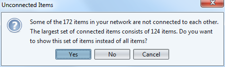
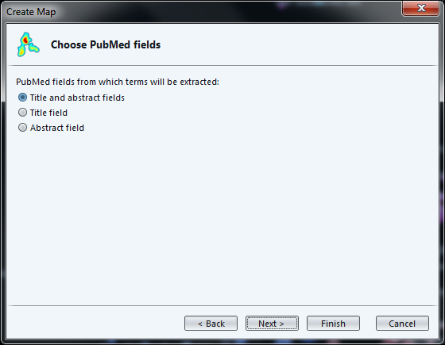

import metaknowledge as mk
import networkx as nx
import matplotlib.pyplot as plt
%matplotlib inline
import metaknowledge.contour as mkv
import pandas
RC = mk.RecordCollection("pubmed_medline.txt")
for R in RC:
if 'AB' in R.keys():
print(R['AB'])
print('\n')A tutorial for vosviewer
last modified: 2017-03-30
'Escape' or 'o' to see all sides, F11 for full screen, 's' for speaker notes
Presentation of this tutorial
This tutorial explains how to create a semantic map like this one:

Figure 1. a map with VosViewer
VosViewer is developed by Nees Jan van Eck and Ludo Waltman, researchers at the CWTS Leiden of Leiden University in Leiden.
The software was built for the analysis of scientometric data (the scientific study of the scientific activity), but the software has a broader relevance.
In particular, VosViewer is particularly good at producing textual maps of any sorts, not just from scientometric datasets.
A 2.0 version of VosViewer is announced for 2017, capable of handling larger datasets and broadening its focus (will explicitly target non-scientometricians).
Importing a dataset
We can use several methods:
directly importing datasets of a bibliometric nature (Web of Knowledge, Scopus, Medline or RIS)
importing a text, where each paragraph will be considered a "unit of text" to compute co-occurrences.
importing your own networks (created for example with Gephi, etc.)
Let’s see each of these methods in turn.
1. Importing a bibliometric dataset (WoK, Scopus, etc.)
We need a bibliometric dataset to practice.
download this zip file and unzip it on your computer.
The file pubmed_medline.txt inside the zip contains 1484 research articles from the PubMed database of scientific reports, retrieved by conducting this query:
"social neuroscience" OR "neuroeco*" OR "decision neuroscience"
→ The query can be seen at online here.

Figure 2. Follow the wizard for biblio data - 1
Get your file pubmed_medline.txt ready as we need it now:

Figure 3. Follow the wizard for biblio data - 2
Now is the step when you decide what kind of network you are interested in.
- TIP
Careful, a network of co-occurrences of keywords does not use the abstracts of the bibliographic entries, but only the keywords supplied by the authors or the editor. These are typically much less informative. There is another way in VosViewer to work with abstracts.
The full web link to the explanation of full vs binary counting: http://seinecle.github.io/gephi-tutiorals/working-with-text-en.html#binary-counting

Figure 4. Follow the wizard for biblio data - 3
You decide how frequent an author should be in your dataset to be included in the visualization. Here, individuals who have authored less than 5 papers in the collection will be left out.

Figure 5. Follow the wizard for biblio data - 4
Here you can decide that authors who are just weakly connected to others (because they did not co-author much) can be left out.

Figure 6. Follow the wizard for biblio data - 5
The next screen is a table to recap which authors are going to be included in the visualization.
We can notice there are near duplicates (luo yj and luo y), which means we should have used the thesaurus to merge them earlier.

Figure 7. Follow the wizard for biblio data - 6
The last step of the wizard is an invitation to show only the largest group of connected authors. Smaller groups, isolated from this big group, would be discarded.
Clicking on "No" makes sure we see all groups.

Figure 8. Follow the wizard for biblio data - 7
The result is a network made of groups of authors and their connections, corresponding to the fact that they co-authored papers.
Bigger nodes represent authors with the most publications.
Notice that the background can be switched to black - it can make it easier to read.
Figure 9. Follow the wizard for biblio data - 8
Before going into the details of the visualization, we’ll see how to import to other kinds of data source:
1. Importing a text (of a bibliometric nature or not)
We need a dataset to practice.
The dataset must be a single text file, where each unit of text is a paragraph. The network will be made of most frequent terms in the network. Terms appearing in the same paragraphs will be connected.
See this page for more precisions on units of text / paragraphs.
download this zip file and unzip it on your computer.
The file pubmed_abstracts.txt inside the zip contains 1484 abstracts (short summaries) of research articles from the PubMed database of scientific reports, retrieved by conducting this query:
"social neuroscience" OR "neuroeco*" OR "decision neuroscience"
→ The query can be seen at online here. (the query returns more than 1484 results, because some articles have no abstract).
As a sidenote, these abstracts were extracted from the pubmed records in the following way:
installing Anaconda, a toolkit for Python with many useful things inside
installing Metaknowledge, a bibliometric toolkit in Python
running this Jupyter notebook:

Figure 10. Using Metaknowledge to extract abstracts from records
We follow the wizard that will create the text map for us:

Figure 11. Follow the wizard for text maps - 1
Now we can choose the format of our input file.
Vosviewer format: this is where we can load a file made of paragraphs:

Figure 12. Choosing the VosViewer format
But VosViewer has scientometrics functions, which actually can extract abstracts directly from MEDLINE entries (or Scopus, Web of Knowledge…)
So we can actually come back to the file we had at the beginninf of this tutorial (pubmed_medline.txt) and choose the PubMed format:

Figure 13. Choosing the PuMed format
Loading a file in the PubMed / Medline format allows for a finer control:
we are asked if we want to load abstracts, titles, or both
it will remove copyright statements for us (such as "Copyright @Elsevier 2016") which often pollute the text.

Figure 14. Choosing the PuMed format
The next screen, as before, asks if we prefer binary or full counting, and if we have a thesaurus file.
We must then select the minimum frequency of a term (number of times it occurs in total) to be included in the map:

Figure 15. Minimum frequency for a term to be included
The next screen invites us to select the most "relevant" terms, with a parameter already set to a default value.
While the definition of "relevance" is difficult to explain briefly, its basic idea is that a term is all the more relevant that it tends to be associated with specific words, not with all words equally.
The developers of VosViewer explain their approach here.

Figure 16. Selecting the most relevant words
The last screen of the wizard recaps in a table the terms which will be included in the map, ranked by relevance.

Figure 17. Recap table
The result:
Figure 18. Result - the map of terms
3. Importing a network (gml format or pajek)
This part will not be developed in this tutoriaal as this is straightforward: you have a file in gml or pajek format, you import it:

Figure 19. Importing a network
It should however be noted that the import of gml files created with Gephi generates error - possibly a result of the GML format being poorly defined?
(to be continued)
More tutorials on vosviewer
The manual of vosviewer is included as a pdf file in the zip when downloading the software.
Vosviewer tutorials website, from which these slides are linked: https://seinecle.github.io/vosviewer-tutorials/
The end!